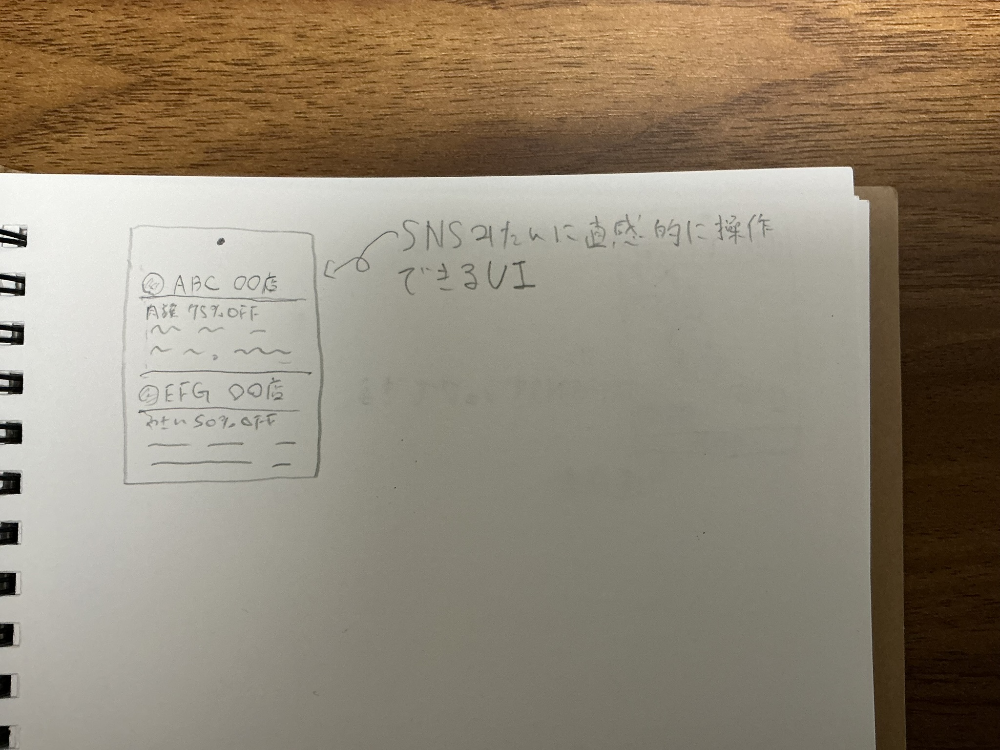
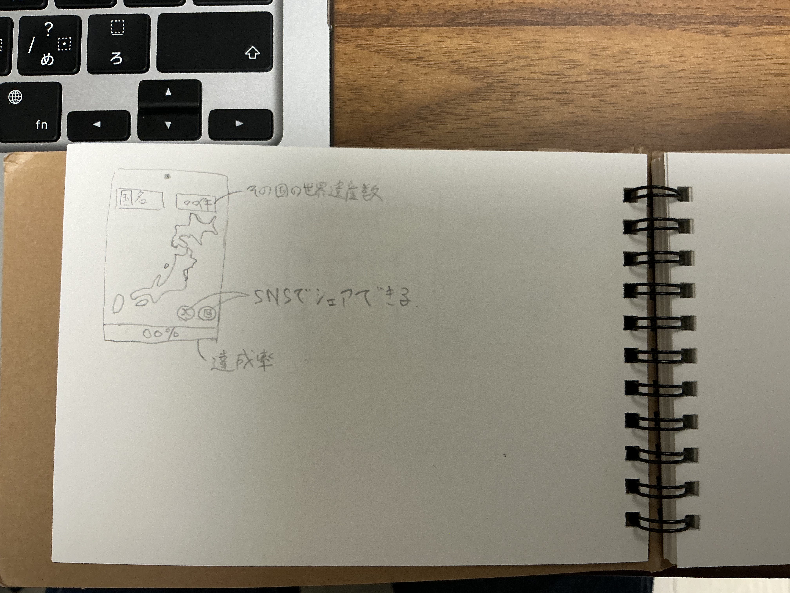

-食品ロスを削減するアプリ-
飲食系列のバイトをしていて、毎回廃棄の食材が出るのでそれが少しでも減ればいいのではと思った。
SNSのように親しみやすいUIにして廃棄となる食材を半額以上の価格設定で公開し、消費者に買ってもらえればいいのではと考えた。
また、対消費者ようのアプリだけでなく、姉妹アプリのような形で家畜を育てている牧場経営者向けにも、シームレスで簡単にロスの食材を家畜の餌として買い取ることのできるようなアプリもあると効率も上がると思った。

-自分だけの世界遺産マップ-
私の数ある趣味の一つに、1人海外旅行がある。タイのアユタヤを歩いていた時自分だけの世界遺産マップがあればもっと旅行が楽しくなりそうだと思った。
実際に足を運んだ世界遺産が記録され、どんどんマップが埋まっていき感じ。1100件以上ある世界遺産をコンプリートしたときは達成感がすごいと思う。
